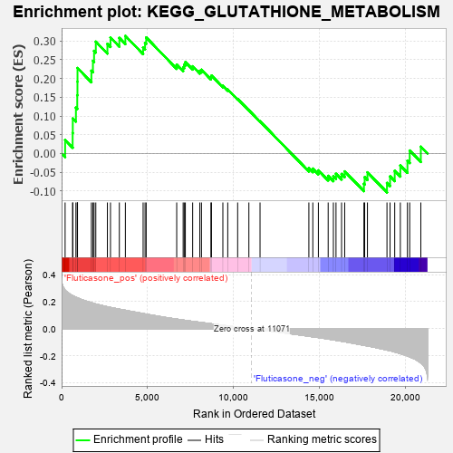
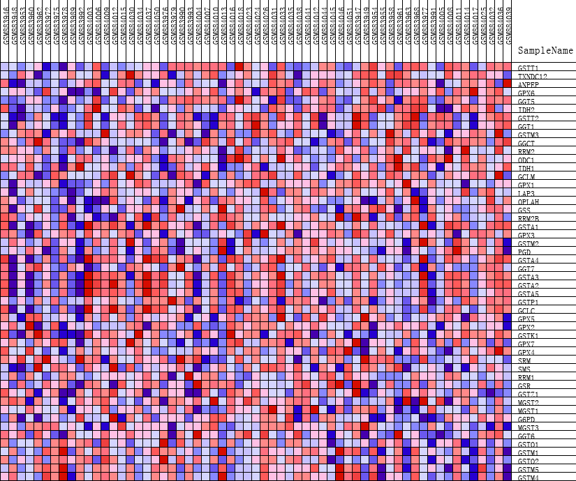
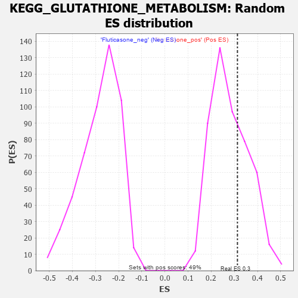

| | | Dataset | GSEA_expr_Flu.GSEA_timepoint.cls#Fluticasone |
| Phenotype | GSEA_timepoint.cls#Fluticasone |
| Upregulated in class | Fluticasone_pos |
| GeneSet | KEGG_GLUTATHIONE_METABOLISM |
| Enrichment Score (ES) | 0.3134037 |
| Normalized Enrichment Score (NES) | 1.113726 |
| Nominal p-value | 0.3319838 |
| FDR q-value | 1.0 |
| FWER p-Value | 0.965 |
Table: GSEA Results Summary

Fig 1: Enrichment plot: KEGG_GLUTATHIONE_METABOLISM
Profile of the Running ES Score & Positions of GeneSet Members on the Rank Ordered List
| PROBE | DESCRIPTION
(from dataset) | GENE SYMBOL | GENE_TITLE | RANK IN GENE LIST | RANK METRIC SCORE | RUNNING ES | CORE ENRICHMENT | | 1 | GSTT1 | NA | | | 204 | 0.285 | 0.0360 | Yes |
| 2 | TXNDC12 | NA | | | 643 | 0.246 | 0.0547 | Yes |
| 3 | ANPEP | NA | | | 651 | 0.245 | 0.0936 | Yes |
| 4 | GPX6 | NA | | | 834 | 0.233 | 0.1223 | Yes |
| 5 | GGT5 | NA | | | 911 | 0.229 | 0.1553 | Yes |
| 6 | IDH2 | NA | | | 923 | 0.228 | 0.1914 | Yes |
| 7 | GSTT2 | NA | | | 926 | 0.228 | 0.2278 | Yes |
| 8 | GGT1 | NA | | | 1734 | 0.193 | 0.2207 | Yes |
| 9 | GSTM3 | NA | | | 1824 | 0.189 | 0.2468 | Yes |
| 10 | GGCT | NA | | | 1891 | 0.187 | 0.2736 | Yes |
| 11 | RRM2 | NA | | | 1992 | 0.183 | 0.2981 | Yes |
| 12 | ODC1 | NA | | | 2667 | 0.162 | 0.2923 | Yes |
| 13 | IDH1 | NA | | | 2847 | 0.157 | 0.3091 | Yes |
| 14 | GCLM | NA | | | 3363 | 0.145 | 0.3080 | Yes |
| 15 | GPX1 | NA | | | 3713 | 0.137 | 0.3134 | Yes |
| 16 | LAP3 | NA | | | 4747 | 0.112 | 0.2828 | No |
| 17 | OPLAH | NA | | | 4859 | 0.110 | 0.2951 | No |
| 18 | GSS | NA | | | 4926 | 0.108 | 0.3092 | No |
| 19 | RRM2B | NA | | | 6703 | 0.071 | 0.2371 | No |
| 20 | GSTA1 | NA | | | 7078 | 0.064 | 0.2297 | No |
| 21 | GPX3 | NA | | | 7141 | 0.063 | 0.2369 | No |
| 22 | GSTM2 | NA | | | 7206 | 0.062 | 0.2437 | No |
| 23 | PGD | NA | | | 7632 | 0.054 | 0.2324 | No |
| 24 | GSTA4 | NA | | | 8049 | 0.047 | 0.2204 | No |
| 25 | GGT7 | NA | | | 8145 | 0.046 | 0.2233 | No |
| 26 | GSTA3 | NA | | | 8696 | 0.037 | 0.2033 | No |
| 27 | GSTA2 | NA | | | 8728 | 0.036 | 0.2076 | No |
| 28 | GSTA5 | NA | | | 9391 | 0.026 | 0.1806 | No |
| 29 | GSTP1 | NA | | | 9675 | 0.021 | 0.1706 | No |
| 30 | GCLC | NA | | | 10252 | 0.012 | 0.1455 | No |
| 31 | GPX5 | NA | | | 10906 | 0.002 | 0.1151 | No |
| 32 | GPX2 | NA | | | 11556 | -0.007 | 0.0858 | No |
| 33 | GSTK1 | NA | | | 14400 | -0.056 | -0.0390 | No |
| 34 | GPX7 | NA | | | 14630 | -0.060 | -0.0402 | No |
| 35 | GPX4 | NA | | | 14954 | -0.065 | -0.0450 | No |
| 36 | SRM | NA | | | 15524 | -0.076 | -0.0596 | No |
| 37 | SMS | NA | | | 15827 | -0.082 | -0.0606 | No |
| 38 | RRM1 | NA | | | 15980 | -0.085 | -0.0541 | No |
| 39 | GSR | NA | | | 16304 | -0.092 | -0.0545 | No |
| 40 | GSTZ1 | NA | | | 16486 | -0.096 | -0.0477 | No |
| 41 | MGST2 | NA | | | 17606 | -0.122 | -0.0807 | No |
| 42 | MGST1 | NA | | | 17650 | -0.124 | -0.0630 | No |
| 43 | G6PD | NA | | | 17811 | -0.127 | -0.0502 | No |
| 44 | MGST3 | NA | | | 18948 | -0.157 | -0.0785 | No |
| 45 | GGT6 | NA | | | 19128 | -0.163 | -0.0609 | No |
| 46 | GSTO1 | NA | | | 19399 | -0.172 | -0.0461 | No |
| 47 | GSTM1 | NA | | | 19727 | -0.184 | -0.0320 | No |
| 48 | GSTO2 | NA | | | 20140 | -0.201 | -0.0193 | No |
| 49 | GSTM5 | NA | | | 20272 | -0.208 | 0.0079 | No |
| 50 | GSTM4 | NA | | | 20920 | -0.254 | 0.0182 | No |
Table: GSEA details [plain text format]

Fig 2: KEGG_GLUTATHIONE_METABOLISM
Blue-Pink O' Gram in the Space of the Analyzed GeneSet

Fig 3: KEGG_GLUTATHIONE_METABOLISM: Random ES distribution
Gene set null distribution of ES for KEGG_GLUTATHIONE_METABOLISM